Настройки
Система скинов ely.by (
authlib
Authlib - .jar файл который меняет систему авторизации на определенную (в данном случае на систему скинов ely.by)
)
Система скинов ely.by (
CustomSkinLoader
CustomSkinLoader - мод который также может загружать ваш скин с помощью системы скинов ely.by (его нужно установить в папку ваших модов, используйте если вариант с authlib не работает)
)
Выделенная память
1Gb
Кастомное разрешение
Папка игры
Выбрать фон